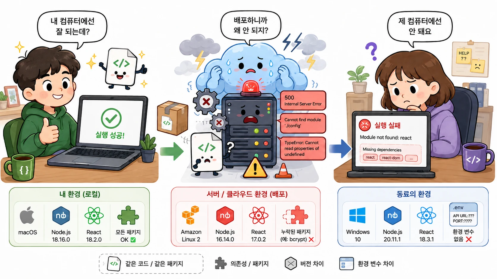
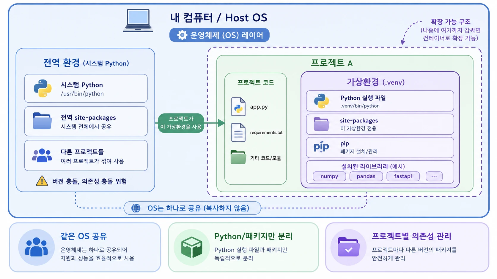
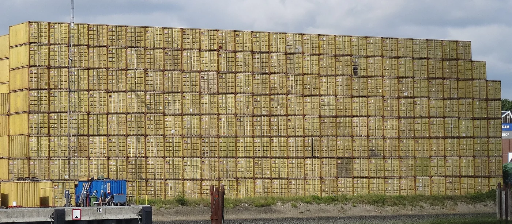
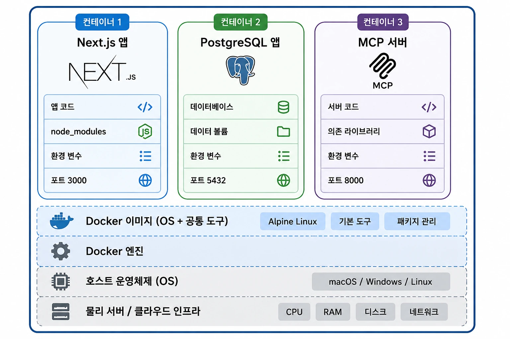
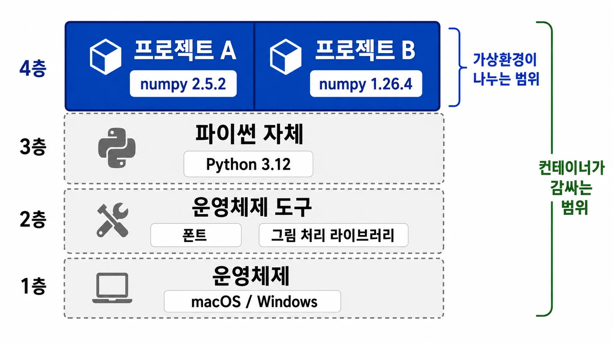
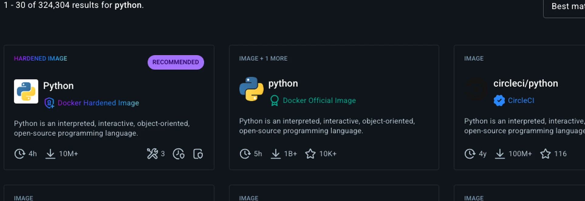
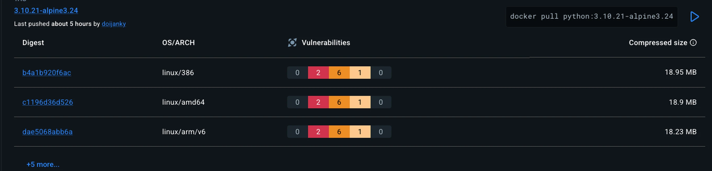
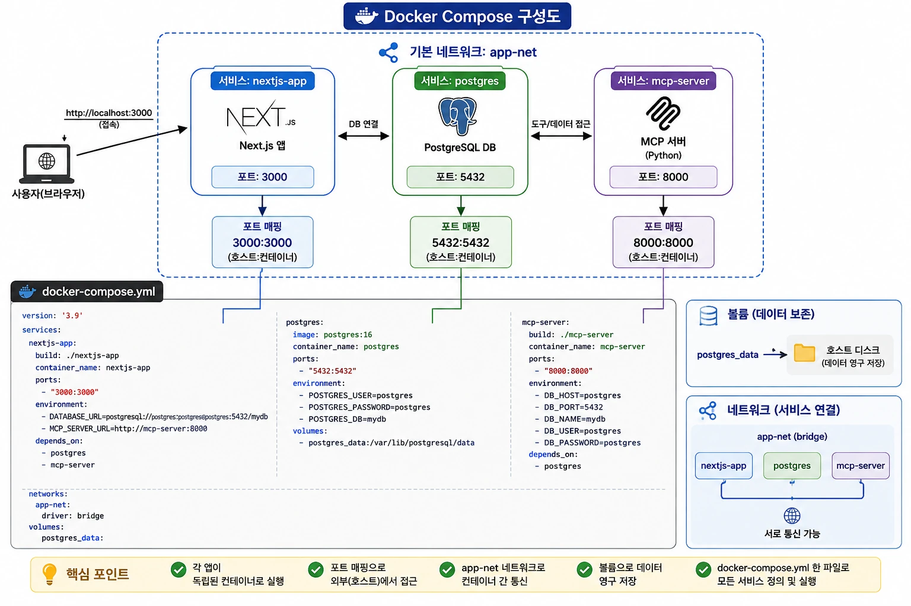

Docker 다루기
오늘의 일정
컨테이너를 손에 익히기
컨테이너가 무엇인지 보고, 남이 올린 이미지를 받아 띄우고 안을 들여다본다.
Codex 로 도커라이징
무엇을 알려줘야 쓸 만한 Dockerfile 이 나오는지, 나온 것을 어떻게 읽고 고치는지 본다.
데이터 · 포트 · 여러 서버
사고가 제일 많이 나는 세 곳이다. 지우면 날아가는 데이터, 안 열리는 포트, 서로 못 찾는 상자.
사내망과 실전
바깥이 막힌 곳에서 돌게 고치고, 앞에서 만든 것을 실제로 담아 올린다.
격리 — 가상환경에서 컨테이너까지
같은 코드, 다른 결과

버전 충돌
$ pip install numpy==1.26.4
$ python -c "import numpy; print(numpy.__version__)"
1.26.4
$ pip install numpy==2.5.2 ← 다른 버전을 깐다
$ python -c "import numpy; print(numpy.__version__)"
2.5.2 ← 앞의 것이 사라졌다가상환경
나누지 않으면
라이브러리가 컴퓨터 한 곳에 쌓인다.
프로젝트 A 와 B 가 같은 곳을 쓴다.
버전이 다르면 나중에 깐 것이 이긴다.
가상환경을 쓰면
프로젝트마다 자기 폴더를 하나 갖는다.
그 안에만 라이브러리를 깐다.
A 와 B 가 서로를 안 건드린다.
가상환경이 필요한 이유
node_modules
$ ls
node_modules package.json src ← 프로젝트 폴더 안에 있다
$ du -sh node_modules
2.5G ← 이 프로젝트만의 것
$ ls node_modules | wc -l
797 ← 꾸러미 개수
$ du -sh ~/다른프로젝트/node_modules
819M ← 다른 프로젝트는 따로 갖는다venv 와 conda
$ python -m venv A && A/bin/pip install numpy==2.5.2
$ python -m venv B && B/bin/pip install numpy==1.26.4
$ A/bin/python -c "import numpy; print(numpy.__version__)"
2.5.2
$ B/bin/python -c "import numpy; print(numpy.__version__)"
1.26.4 ← 둘이 같이 산다conda create -n 이름 도 같은 일을 한다. 도구만 다르다..venv 폴더 안

.venv 를 지우면 그 환경만 사라진다. 전역은 안 건드린다.venv 와 conda 비교
| 하고 싶은 일 | venv | conda |
|---|---|---|
| 라이브러리를 프로젝트마다 나누기 | 된다 | 된다 |
| 파이썬 버전 바꾸기 | 안 된다 | 된다 |
| 일부 운영체제 라이브러리 깔기 | 안 된다 | 되기도 한다 |
| 운영체제 자체를 바꾸기 | 안 된다 | 안 된다 |
| 통째로 옮기기 | 안 된다 | 안 된다 |
conda 는 버전까지 바꿔 준다.벽 ① 운영체제
$ which tesseract 글자 인식 도구
없음
$ which libgl 그림 처리 라이브러리
없음conda 로 일부는 깔린다. 그래도 운영체제 자체는 못 바꾼다.벽 ② 옮기기
넘어가는 것
requirements.txtenvironment.yml
— 이름과 버전 목록뿐이다
안 넘어가는 것
운영체제와 그쪽 도구
데이터 위치 · 시작 명령 · 키
node_modules 의 벽
$ ls node_modules/@next/
swc-darwin-arm64 ← macOS·ARM 전용으로 만들어진 것
$ ls node_modules/@next/ | grep linux
(없음) ← 리눅스용은 안 깔려 있다컨테이너
컨테이너라는 이름

규격이 하나다
안에 무엇이 들었는지 몰라도
배 · 기차 · 트럭이 다 싣는다.
같은 생각을 프로그램에
안에 파이썬이 들었는지 자바가 들었는지
받는 쪽은 몰라도 된다.
Docker
개인·소규모는 무료로 쓴다
컨테이너 구조

감싸는 범위 비교

없는 버전 쓰기
$ python3 --version ← 이 PC 에 깔린 것
Python 3.9.6
$ docker run --rm python:3.9-slim python --version
Python 3.9.25
$ docker run --rm python:3.13-slim python --version
Python 3.13.15 ← 둘을 동시에컨테이너 안의 OS
$ docker run --rm python:3.12-slim sh -c 'cat /etc/os-release | head -2'
PRETTY_NAME="Debian GNU/Linux 13 (trixie)"
NAME="Debian GNU/Linux" ← 맥이 아니라 데비안apt install 로 tesseract 도 깐다.가상환경과 컨테이너
| 하고 싶은 일 | 가상환경 | 컨테이너 |
|---|---|---|
| 라이브러리를 프로젝트마다 나누기 | 된다 | 된다 |
| 파이썬 버전 바꾸기 | conda 는 된다 | 된다 |
| 운영체제 도구 깔기 | 거의 안 된다 | 된다 |
| 통째로 옮기기 | 안 된다 | 된다 |
| 뜨는 시간 | 즉시 | 몇 초 |
| 크기 | 수십 MB | 수백 MB |
오늘의 순서
이미지 · 컨테이너 · Dockerfile
셋의 관계
build 가 이미지를 만들고, run 이 컨테이너를 띄운다.Docker 구조

이미지 층
이미지 크기
IMAGE DISK USAGE CONTENT SIZE
hello-world:latest 22.6kB 10.3kB
python:3.12-slim 205MB 45.6MB
posco-app:1.2 220MB 47.9MB
mcp-host-team2:latest 719MB 153MB ← 무거운 라이브러리가 들었다slim · alpine 이 붙은 것이 가벼운 판이다. 사내망으로 옮길 때 크기가 곧 시간이다.이미지 받아 띄우고 들여다보기
Docker Hub 검색

태그

latest 는 언제 바뀔지 몰라 쓰지 않는다.docker run
Unable to find image 'hello-world:latest' locally ① 내 컴퓨터에 없다
latest: Pulling from library/hello-world ② 받아 온다
Status: Downloaded newer image for hello-world:latest
Hello from Docker!
This message shows that your installation appears to be working correctly.-d --name -p
07975ce4cd81e9a7b345b5fd5b10ee32492c8d282a8e9d2c99 ← 상자 번호eager_tesla 같은 이름이 멋대로 붙는다.-d --name -p 셋만 알면 된다.docker ps
$ docker ps
NAMES IMAGE STATUS PORTS
web nginx:1.27-alpine Up 17 seconds 0.0.0.0:8081->80/tcp
$ curl http://127.0.0.1:8081/
<title>Welcome to nginx!</title> ← 진짜로 응답한다ps 로 떴는지, 실제로 불러서 답하는지. 떴다고 도는 것이 아니다.docker logs
2026/08/17 09:48:21 [notice] 1#1: start worker process 31
172.17.0.1 - - [17/Aug/2026:09:48:39] "GET / HTTP/1.1" 200 615 "curl/8.7.1"
↑ 방금 부른 것이 여기 찍힌다docker logs -f 이름 으로 계속 보면서 부르면 흐름이 보인다.docker exec
$ docker exec web cat /etc/os-release
NAME="Alpine Linux" ← 내 컴퓨터가 아니라 리눅스다
$ docker exec web ls /Users
ls: /Users: No such file or directory ← 내 폴더는 안 보인다stop 과 rm
$ docker stop web ← 멈춘다. 안은 남아 있다
$ docker start web ← 다시 켠다
$ docker rm -f web ← 지운다. 안이 사라진다
$ docker system df
TYPE TOTAL ACTIVE SIZE RECLAIMABLE
Images 13 3 1.564GB 2.658MBdocker system df 로 가끔 확인한다.Codex 에게 도커라이징 시키기
사람 몫과 Codex 몫
| 단계 | 누가 | 무엇을 |
|---|---|---|
| 알려주기 | 사람 | 어떤 프로그램인지, 무엇이 필요한지 여섯 칸 |
| 쓰기 | Codex | Dockerfile 과 requirements.txt |
| 읽고 고치기 | 사람 | 틀린 데를 찾아 다시 시킨다 |
| 돌려 보기 | 사람 | build 하고 run 해서 실제로 뜨는지 |
안 알려준 결과
「도커라이징 해줘」
파이썬 버전을 멋대로 고른다
필요 없는 것을 잔뜩 깐다
포트를 짐작해서 적는다
데이터 위치를 모른 채 넘어간다
여섯 칸을 채워 준 뒤
버전 · 라이브러리 · 시작 명령
열 포트 · 데이터 위치 · 키
여섯 칸
pip list 나 requirements.txt 를 그대로 준다.여섯 칸 찾기
$ python --version
Python 3.12.13
$ pip freeze > requirements.txt ← 깔린 것을 파일로 뽑는다
$ python app.py ← 이게 시작 명령이다pip freeze 결과를 그대로 붙여 넣는 것이 제일 정확하다. 기억으로 적지 않는다..dockerignore
.git
.env ← 키가 든 파일. 절대 안 넣는다
__pycache__
*.ipynb
venv/
node_modules/ ← 플랫폼 전용 바이너리가 들어 있다
data/*.csv ← 큰 데이터는 밖에 둔다COPY . . 가 폴더의 모든 것을 퍼담는다 — 키 파일까지.나온 Dockerfile 읽고 고치기
Dockerfile 읽기
FROM python:3.12-slim 바탕
WORKDIR /app 작업 폴더
COPY requirements.txt . 목록을 넣고
RUN pip install -r requirements.txt 만들 때 한 번 돈다
COPY app.py . 코드를 넣고
EXPOSE 8000 연다고 적어 둔다
CMD ["python", "app.py"] 뜰 때 돈다층 순서
[1/5] FROM python:3.12-slim
[2/5] WORKDIR /app CACHED
[3/5] COPY requirements.txt . CACHED
[4/5] RUN pip install -r requirements.txt CACHED ← 안 다시 깐다
[5/5] COPY app.py . ← 여기만 다시흔한 실수 일곱
| 어떻게 나오나 | 무슨 일이 나나 |
|---|---|
127.0.0.1 로 연다 | 떴는데 밖에서 못 붙는다 |
ENV API_KEY=nvapi-... | 키가 이미지에 박힌다 |
데이터를 COPY 로 넣는다 | 상자를 지우면 같이 날아간다 |
COPY . . 만 쓴다 | 잡동사니와 키 파일까지 들어간다 |
python:latest | 어제와 오늘이 달라진다 |
RUN 과 CMD 를 바꿔 쓴다 | 빌드는 되는데 아무것도 안 돈다 |
| 한글 이미지 이름 | 빌드가 거절당한다 |
안 붙는 컨테이너
$ docker ps
NAMES STATUS PORTS
trap1 Up 4 seconds 0.0.0.0:8085->8000/tcp ← 똑같아 보인다
trap2 Up 2 seconds 0.0.0.0:8086->8000/tcp
$ curl http://127.0.0.1:8085/ → (빈 답)
$ curl http://127.0.0.1:8086/ → 3호기 불량률 12.0%로그로 찾기
trap1: listening on 127.0.0.1:8000 ← 상자 안에서만 받는다
trap2: listening on 0.0.0.0:8000 ← 밖에서도 받는다127.0.0.1 은 「나한테서만」이라는 뜻이다. 상자 안의 나다.-p 로 문을 열어도 안쪽이 안 받으면 소용없다.0.0.0.0 으로 열게 한다. Codex 프롬프트에 미리 적어 둔다.이미지에 박힌 키
ENV NVIDIA_API_KEY=nvapi-Vgkifk... ← Dockerfile 에 값이 박혔다
$ docker history posco-app:1.0
CREATED BY
ENV NVIDIA_API_KEY=nvapi-Vgkifk... ← 이미지를 받은 사람 누구나 본다-e 나 .env 로.고쳐 시키기
세 군데를 고쳐 줘.
1. 앱이 127.0.0.1 이 아니라 0.0.0.0 으로 열게 한다
2. ENV 에 키 값을 적지 마라. 환경변수로 받기만 한다
3. cell_process.csv 를 COPY 하지 말고 밖에서 물리는 방식으로 바꾼다데이터를 남기는 법
사라지는 데이터
$ docker exec web sh -c 'echo "3호기 베어링 점검 완료" > /memo.txt'
$ docker exec web cat /memo.txt
3호기 베어링 점검 완료
$ docker rm -f web && docker run -d --name web nginx:1.27-alpine
$ docker exec web cat /memo.txt
cat: can't open '/memo.txt': No such file or directory ← 없다stop 은 멈추는 것이라 괜찮다. 사라지는 것은 rm 이다. 남길 것은 밖에 둔다.데이터 두는 세 곳
볼륨
$ docker run -d --name memo1 -v memodata:/data nginx:1.27-alpine
$ docker exec memo1 sh -c 'echo "3호기 베어링 점검 완료" > /data/memo.txt'
$ docker rm -f memo1 ← 상자를 없앴다
$ docker run -d --name memo2 -v memodata:/data nginx:1.27-alpine
$ docker exec memo2 cat /data/memo.txt
3호기 베어링 점검 완료 ← 그래도 남아 있다볼륨 관리
$ docker volume ls
DRIVER VOLUME NAME
local memodata
$ docker volume rm memodata ← 이건 진짜로 데이터를 지운다docker volume prune 은 아무도 안 쓰는 볼륨을 지운다. 확인하고 친다.폴더 물리기
$ echo "호스트에서 쓴 파일" > note.txt
$ docker run --rm -v "$PWD:/data" posco-app:1.2 cat /data/note.txt
호스트에서 쓴 파일 ← 상자가 내 파일을 읽는다
$ docker run --rm -v "$PWD:/data" posco-app:1.2 \
sh -c 'echo "상자에서 쓴 줄" >> /data/note.txt'
$ cat note.txt
호스트에서 쓴 파일
상자에서 쓴 줄 ← 상자가 쓴 것이 내 폴더에:ro 를 붙인다.데이터 두는 기준
| 어떤 데이터 | 어디에 | 왜 |
|---|---|---|
| 작고 안 바뀌는 것 | COPY 로 이미지에 | 같이 옮겨져 편하다 |
| 크거나 자주 바뀌는 것 | 폴더를 물린다 | 이미지가 안 커진다 |
| 쌓이는 것 · DB | 볼륨 | 상자를 버려도 남는다 |
| 비밀 | 환경변수 | 이미지에 안 남는다 |
포트와 환경변수
포트 두 개
포트 겹침
Error response from daemon: failed to set up container networking:
Bind for 0.0.0.0:8080 failed: port is already allocated ← 이미 누가 쓰고 있다docker ps 로 무엇이 그 번호를 쥐고 있는지 본다.0.0.0.0
| 앱이 여는 주소 | 누가 붙을 수 있나 | 상자에서 |
|---|---|---|
127.0.0.1 | 같은 기계 안에서만 | 밖에서 못 붙는다 |
0.0.0.0 | 어디서든 | 붙는다 |
127.0.0.1 이 기본값이라 그냥 됐다.키 넣기
$ docker run -d -e NVIDIA_API_KEY=nvapi-... -p 8000:8000 posco-app:1.0
$ cat .env ← 여러 개면 파일로 모은다
NVIDIA_API_KEY=nvapi-...
BIND=0.0.0.0
$ docker run -d --env-file .env -p 8000:8000 posco-app:1.0.env 는 절대 커밋하지 않는다. .gitignore 와 .dockerignore 둘 다에 적는다.env.example 처럼 값이 빈 견본을 같이 둔다.docker history 이미지 | grep -i key — 아무것도 안 나와야 한다.compose 로 여럿 띄우기
손으로 띄우기
$ docker run -d --name db -v pg:/var/lib/postgresql/data postgres:16
$ docker run -d --name api -p 8000:8000 -e DB_HOST=??? posco-api:1.0
$ docker run -d --name web -p 8080:80 -e API=??? posco-web:1.0??? 자리에 무엇을 적을지 모른다. 상자끼리는 서로를 못 찾는다.compose.yml
services:
db:
image: postgres:16
volumes: [pg:/var/lib/postgresql/data]
api:
build: ./api
ports: ["8000:8000"]
environment: { DB_HOST: db } ← 이름으로 가리킨다
depends_on: [db]
volumes: { pg: }docker compose up -d 면 셋이 순서대로 뜬다.compose 전체 구성

expose 와 ports
안 적으면
같은 compose 안의 다른 서비스만 붙는다.
브라우저로는 못 연다.
ports 를 적으면
ports: ["8000:8000"]
바깥까지 열린다. 같은 망의 다른 PC 도 붙는다.
up · ps · down
$ docker compose up -d --build
$ docker compose ps
SERVICE STATUS PORTS
api Up 3 minutes 0.0.0.0:8000->8000/tcp
db Up 3 minutes 5432/tcp ← 밖으로 안 열렸다
$ docker compose down ← 한 번에 내린다docker compose logs 서비스 로 본다. Exited 면 이유가 반드시 찍혀 있다.다시 올리기
$ docker compose up -d --build api ← 고친 서비스만 다시 만든다
$ docker compose restart api ← 코드 안 바뀌었으면 이걸로 충분down 은 상자를 없앤다. 볼륨은 남지만 상자 안에 둔 것은 사라진다.down 하고 up 해서 처음부터 뜨는지 한 번 확인한다.사내망에서 돌게 고치기
막히는 세 곳
FROM python:3.12-slim — 바탕 이미지를 못 받는다.RUN pip install — 라이브러리를 못 받는다.failed to resolve source metadata for docker.io/library/python:3.12-slim
Could not fetch URL https://pypi.org/simple/pandas/사내 저장소
FROM harbor.사내주소/library/python:3.12-slim ← 바탕 이미지
RUN pip install --no-cache-dir \
--index-url https://nexus.사내주소/repository/pypi/simple \
--trusted-host nexus.사내주소 \
-r requirements.txt ← 라이브러리프록시
$ docker build \
--build-arg HTTP_PROXY=$HTTP_PROXY \
--build-arg HTTPS_PROXY=$HTTPS_PROXY \
-t posco-app:1.0 .-e 로 따로 넣는다.실전 — 앱을 컨테이너로
전체 흐름
폴더 구조
공정도우미/
├─ compose.yml ← 셋을 묶는 파일
├─ .env ← 키. 커밋 안 한다
├─ web/ ← Next.js 화면
│ ├─ package.json
│ └─ app/
└─ api/ ← 파이썬 서버
├─ requirements.txt
└─ app.pyDockerfile 프롬프트
web/ 폴더에 Dockerfile 을 만들어 줘. Next.js 앱이다.
node 22-alpine 을 쓴다
만드는 단계와 돌리는 단계를 나눈다 (standalone 출력)
3000 포트를 연다. HOSTNAME 은 0.0.0.0 으로 준다
.dockerignore 도 만든다 — node_modules 와 .next 를 넣는다
파일은 .jsx 로 쓴다. TypeScript 는 안 쓴다node_modules 를 안 빼면 맥용 파일이 이미지에 들어가 리눅스에서 깨진다.받은 것 확인
FROM node:22-alpine AS build 만드는 단계
WORKDIR /app
COPY package*.json ./
RUN npm ci
COPY . .
RUN npm run build
FROM node:22-alpine 돌리는 단계
ENV HOSTNAME=0.0.0.0 PORT=3000 ← 이 줄이 있나 먼저 본다
COPY --from=build /app/.next/standalone ./
CMD ["node", "server.js"]compose 프롬프트
compose.yml 을 만들어 줘. 서비스는 둘이다.
web ./web 을 빌드한다. 3000 포트를 밖으로 연다
api ./api 를 빌드한다. 8000 포트를 밖으로 연다
web 은 api 를 http://api:8000 으로 부른다
키는 .env 에서 읽는다. 값은 파일에 적지 마라
데이터는 볼륨에 남긴다http://api:8000 — 서비스 이름이 곧 주소다. compose 가 이어 준다.build
$ docker compose build
$ docker images
posco-web 1.1 321MB ← 이 둘이 나오면 성공
posco-app 1.2 220MB
$ docker image inspect posco-web:1.1 --format '{{.Architecture}}'
arm64 ← 만든 PC 의 CPU 종류up
$ docker compose up -d
$ docker compose ps
SERVICE STATUS PORTS
api Up 3 seconds 0.0.0.0:8000->8000/tcp
web Up 3 seconds 0.0.0.0:3000->3000/tcp
$ curl http://127.0.0.1:3000/
<h1>공정 도우미</h1> ← 화면이 뜬다save
$ docker save posco-web:1.1 posco-app:1.2 -o images.tar
$ ls -lh images.tar
124M images.tar ← 이미지 둘이 한 파일에
$ ls
compose.yml images.tar .env ← 옮길 것은 이 셋뿐images.tar · compose.yml · .env. 소스 코드는 안 넘긴다.load
$ docker load -i images.tar
Loaded image: posco-web:1.1
Loaded image: posco-app:1.2 ← 파일에서 되살아났다
$ docker compose up -d
$ curl http://127.0.0.1:3000/
<h1>공정 도우미</h1> ← 그대로 뜬다폐쇄망 준비
| 고칠 것 | 왜 |
|---|---|
build: 를 image: 로 | build 로 두면 받는 쪽이 다시 만들려고 인터넷을 찾는다 |
--platform linux/amd64 | 맥에서 만든 것은 arm64 다. x86 서버에서 안 뜬다 |
| Docker Desktop 라이선스 | 규모가 있는 회사는 유료다. 담당자에게 먼저 확인한다 |
compose.yml 은 따로 둔다.--platform linux/amd64 로 만든다.증상별 진단
| 증상 | 먼저 볼 곳 |
|---|---|
바로 Exited | docker compose logs 서비스 — 죽은 이유가 있다 |
Up 인데 응답 없음 | 로그의 listening on 줄 — 127.0.0.1 인가 |
| 포트가 이미 쓰인다고 함 | lsof -nP -iTCP:3000 -sTCP:LISTEN |
| load 한 것이 안 뜸 | docker image inspect — CPU 종류가 맞나 |
| 빌드가 안 됨 | 오류 줄의 [n/m] — 몇 번째 단계인가 |
조별 과제
| 무엇 | 내용 |
|---|---|
| 파일 셋 | images.tar · compose.yml · env.example |
| 고친 내역 | Codex 가 내놓은 것에서 무엇을 왜 고쳤는지 한 줄씩 |
| 도는 화면 | compose ps 와 브라우저 화면 |
load 하고 띄워 본다. 그게 통과 기준이다.정리
오늘 배운 여섯
build 로 만들고 run 으로 띄운다.0.0.0.0 으로 열어야 밖에서 붙는다. 안 붙으면 여기부터 본다.오개념 다섯
| 흔한 생각 | 실제 |
|---|---|
| 컨테이너는 가상 머신이다 | 운영체제를 따로 안 띄운다. 그래서 가볍고 빠르다 |
| 재시작하면 데이터가 사라진다 | 재시작은 괜찮다. rm 할 때 사라진다 |
-p 를 열면 무조건 붙는다 | 앱이 127.0.0.1 로 열면 안 붙는다 |
| 이미지를 지우면 키도 지워진다 | 받아 간 사람 이미지에는 그대로 남아 있다 |
| 빌드가 되면 맞게 만든 것이다 | 빌드는 문법만 본다. 도는지는 별개다 |
치트시트
docker run -d --name 이름 -p 앞:뒤 이미지 띄운다
docker ps 무엇이 도나
docker logs 이름 --tail 20 왜 안 되나
docker exec 이름 ls /경로 안을 본다
docker stop / start / rm -f 이름 멈춤 · 켬 · 없앰
docker build -t 이름:버전 . 만든다
docker compose up -d --build / down 묶음으로 올림 · 내림docker ps 로 떴는지, docker logs 로 왜인지.